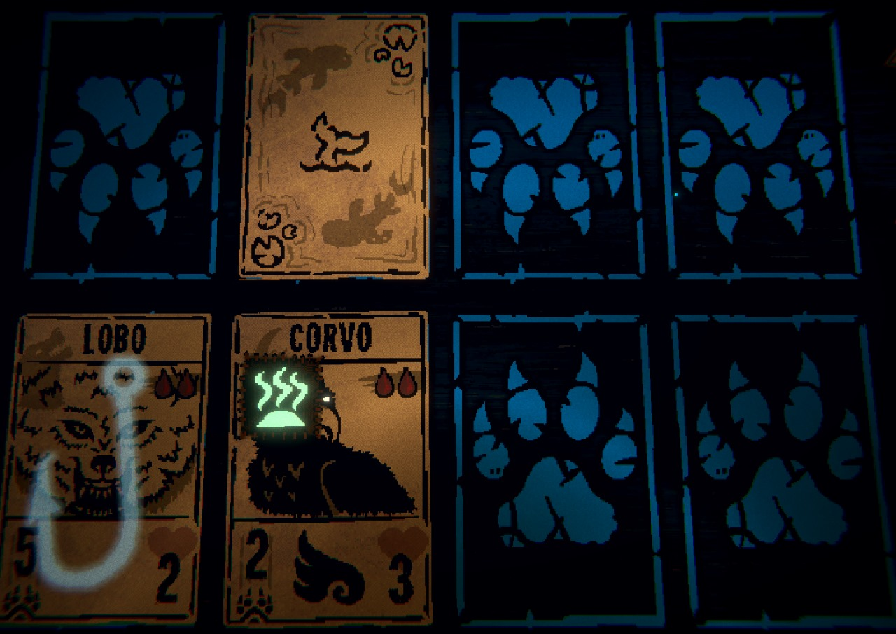
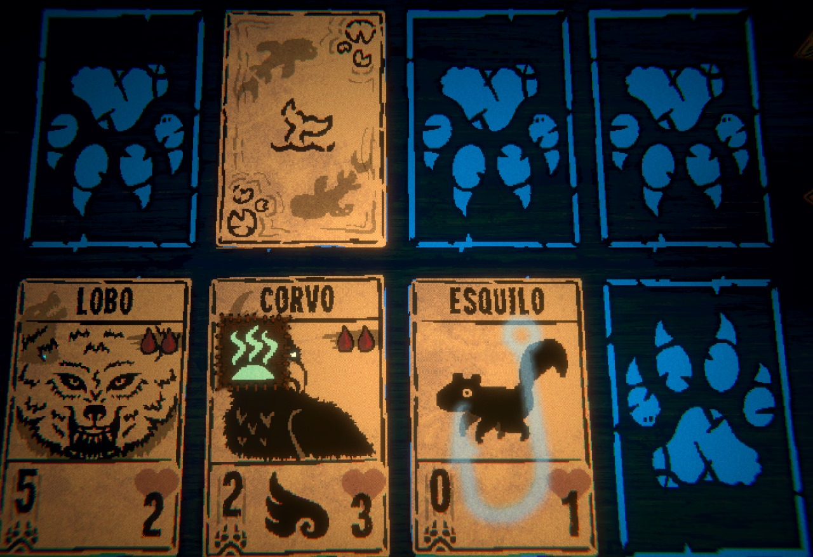
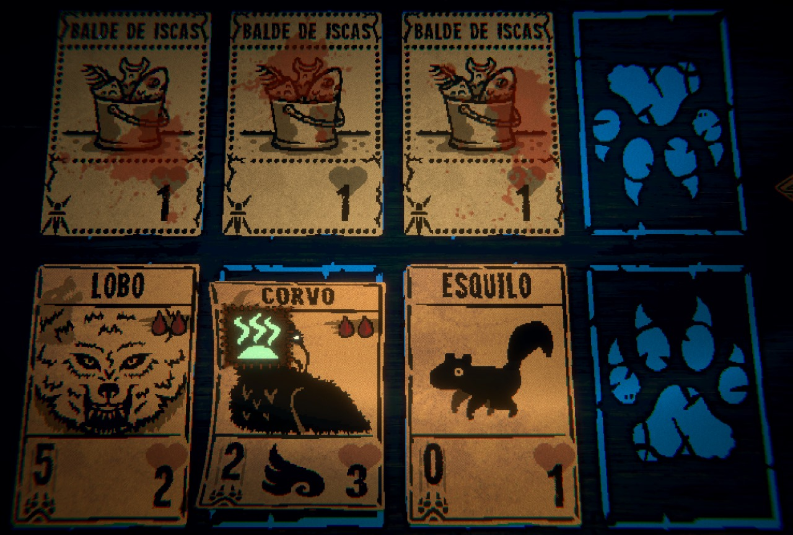

Em sua primeira fase, o Pescador joga seu Martim-Pescador na segunda casa. À partir do segundo turno, o Pescador fisga com seu anzol a última carta jogada, puxando-a para seu lado do tabuleiro, empurrando quaisquer cartas no caminho.
 Na segunda fase, o Pescador limpa seu próprio tabuleiro, e joga um Balde de iscas em frente a cada carta presente no tabuleiro.
É posta em frente à todas as suas cartas presentes no tabuleiro. Quando atingida, um Tubarão surge em seu lugar.